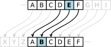
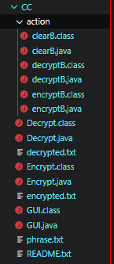
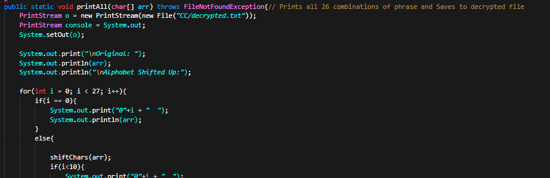
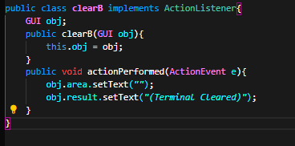
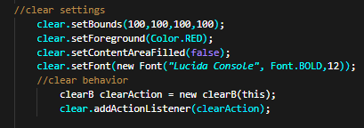
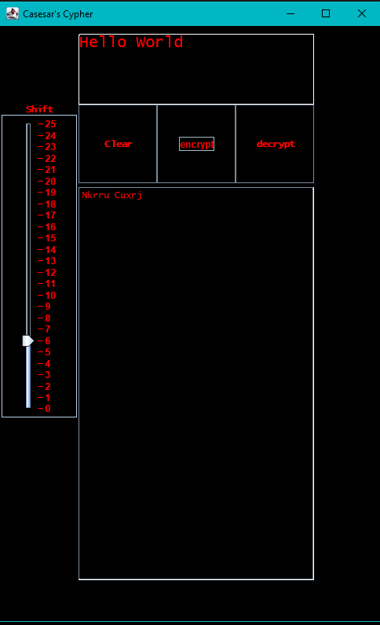
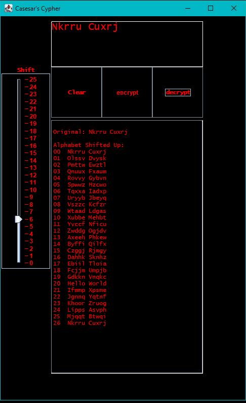

What is a Caesar's Cypher?
As defined by Wikipedia
"The action of a Caesar cipher is to replace each
plaintext letter with a different one a fixed number
of places down the alphabet."

Image provided by Wikipedia
What I used

These are the files I used to create the GUI application.
All are under the package folder CC which stands for "Caesar's Cypher"
I initilially didn't have the idea of creating a GUI application and just
Wrote two seperate Java algorithms for encrypting and decrypting.
The encrypt.java would read off of the text inside the phrase.txt and shift
the cypher by an int value of args[0] and write to the encrypted.txt text file
The decrypt.java would read the encrypted.txt and would return each possible
Cypher shift into the terminal but than was change to return it into the
decrypted.txt because I didn't expect to be using a GUI
The method I used to quickly change the output to the terminal to file was actually
quite interesting as I have never done it before
I found out that you can change the PrintStream of the System.out.print() to write
into a folder if you used System.setOut(PrintStream) and set PrintStream as a new PrintStream(File)
So instead of having to rewrite everything from System.out.println() to a FileWriter I just switched
The PrintStream and it accomplished the exact same thing by just adding 3 lines of code in a few seconds
But I do believe you still need to import Java.io.*

Creating the Algorithms
The algorithms are really quite simple
I just took a phrase from a txt folder and converted it into a
char[] array and than incremented the characters. But if the character
Reached the end of the alphabet like 'z' or 'Z' than they would go back
to being 'a' or 'A' otherwise they would become brackets and curly brackets
After the programs were finished they would write to their respected file
such as encrypted.txt or decrypted.txt
Creating the GUI application
For actually creating the visual part of the GUI was simple
The only new things that I used were the JScollPane incase
the decrypting.txt outputed way too long and need extra room
and the Slider so the user can pick a shift value to encrypt to
The real trick to this project was finding out how to implement
the algorithms I created into the GUI application and that was done
inside the actions folder where I put all the actionListeners
This time I actually didn't use annonymouse classes like I did with
The TicTacToe GUI project. Instead I used a much better method of
implementing ActionListener into the class and than inside the class

Than from here I created an Object of the class
inside the GUI.java so I can add the behavior to the
JComponent of my choosing

In order to do this though I had to set my JComponents that
required an ActionListener as PUBLIC but I could of just
used a Setter/Getter which would have been smarter
But because I understood the scope of this project and
I knew it wasn't going to get much larger I figured it was fine
letting the JComponents stay as PUBLIC
Application in Action
After adding the algorithms properly to the actionListeners and
adding the actionListeners to the JComponenets this is the final result
Of course I did a little visual tweaking to fit my style so I made
the text Red and the background White

Here we have the message "Hello World" and shifting
the phrase up alphabetically by 6 letters
The output is than Nkrru Cuxrj
The program is actually CAPS friendly as CAPS and NON-CAPS
are both handled for properly
But it isn't friendly to non alphbetical characters
In hindsight I could of set the program to just look over
Non alphabetical characters

Now here we have the program decrypting
So say a stranger in a noire trench coat at a diner at 3 AM slipped you
a napkin with "Nkrru Cuxrj" written on it in pen and you wanted to know
how to decypher it without manually changing each character (10chars)
26 times (260 Characters!)
Instead you just write the phrase into the program and hit decrypt
Now it does it automatically for you
If you read through the shift you will find that shifting the phrase
up 20 times gives you the original message "Hello World"
The reason shifting 20 times up instead of 6 times up like we
had originally encrypted is because when we encrypted we shift up 6 times
the decrypter also shifts up
We could decypt by shifting down 6 or by shifting up 20
It's because the alphabet will loop back from A to A if you shift 26 times
Shifting down by 6 or shifting up by 20 still equals the same result
Because there are 26 characters in the alphabet and 6 + 20 = 26
MIND BLOWN
Thanks for listening,
Study hard,
Peace.